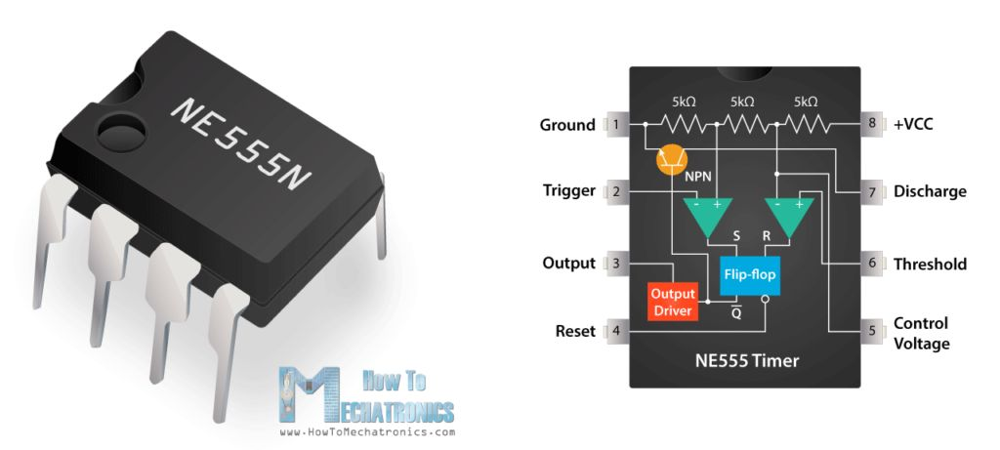
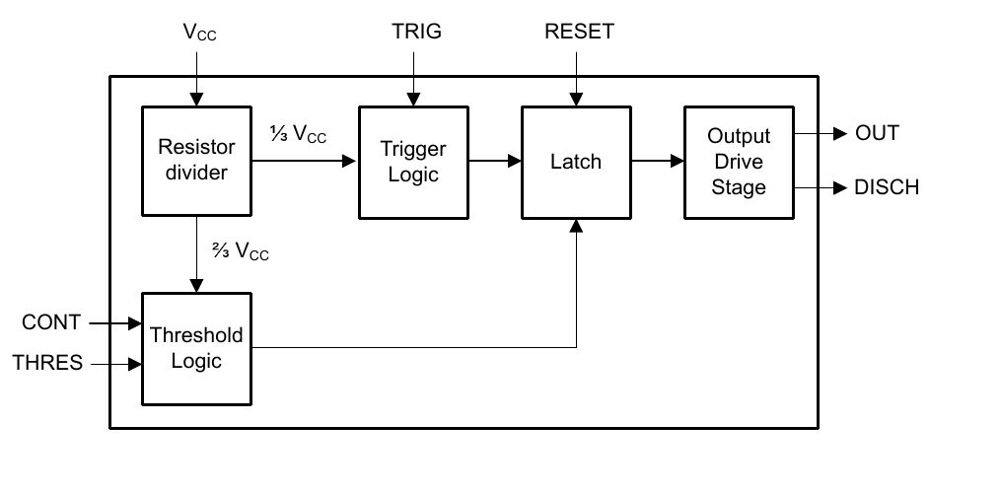
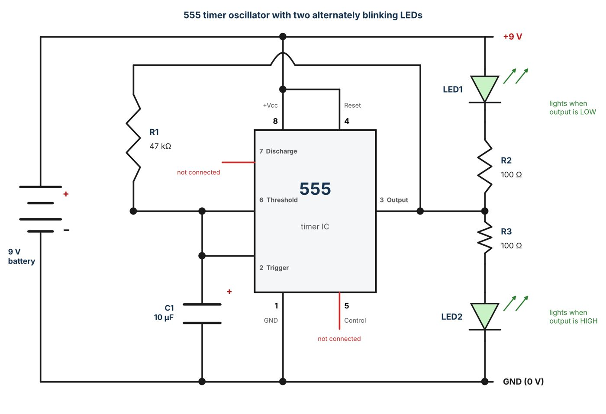
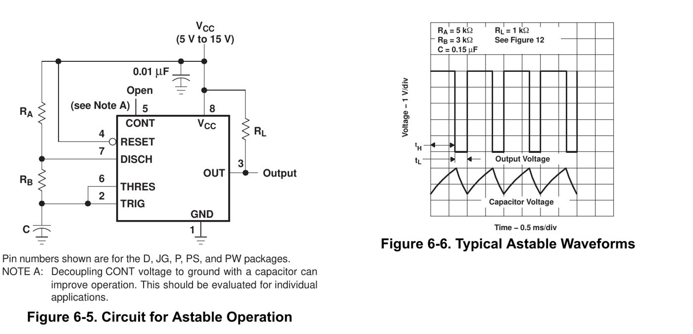
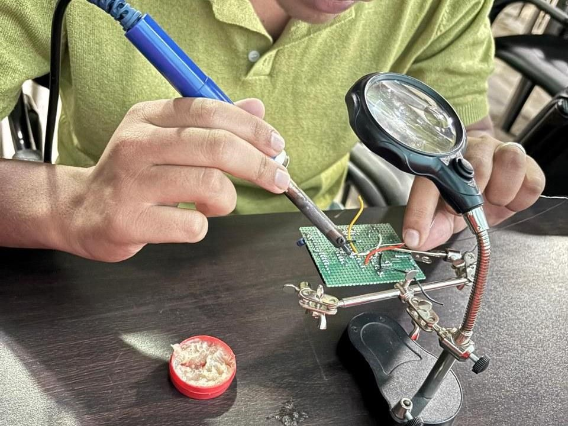
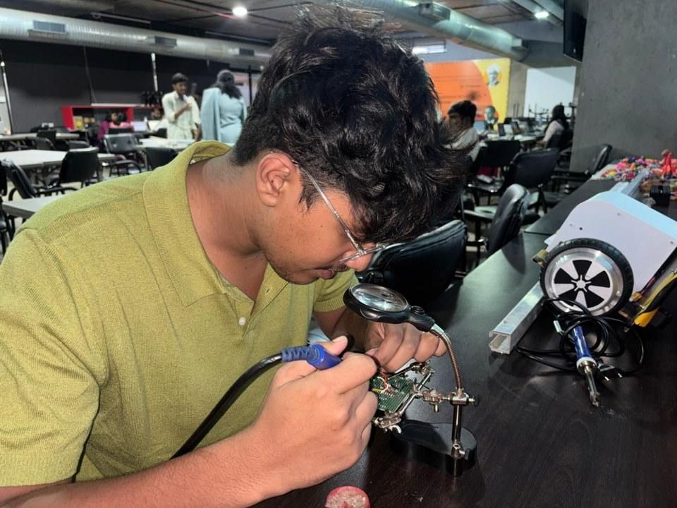
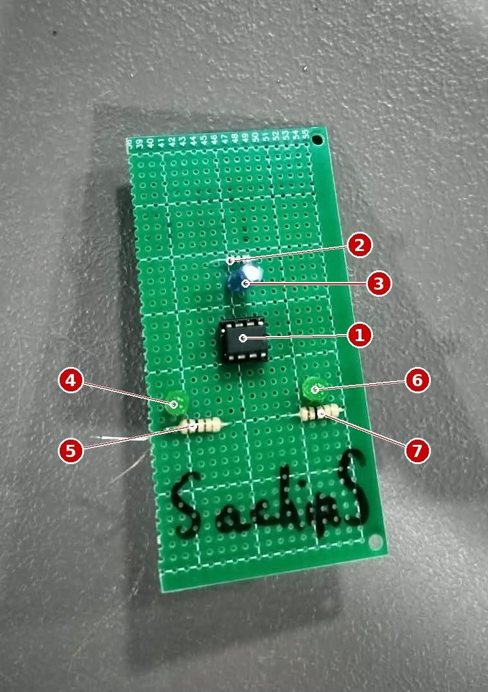
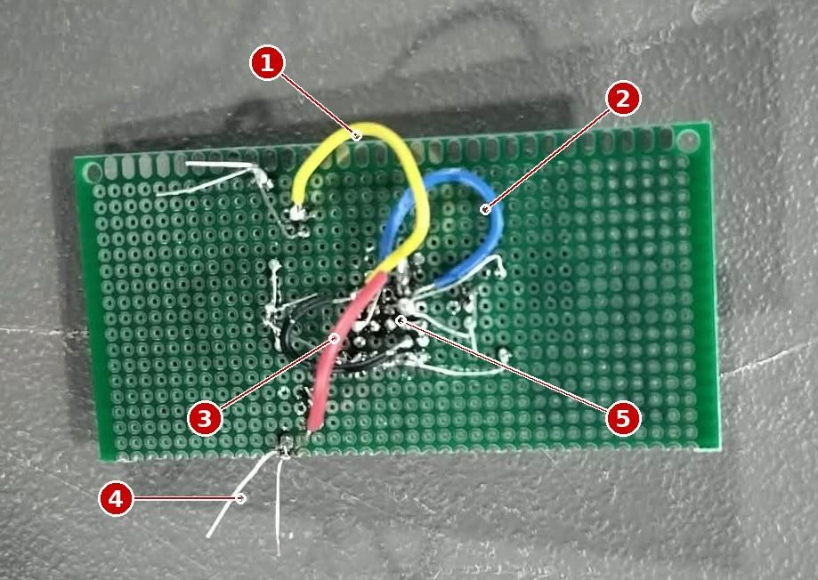
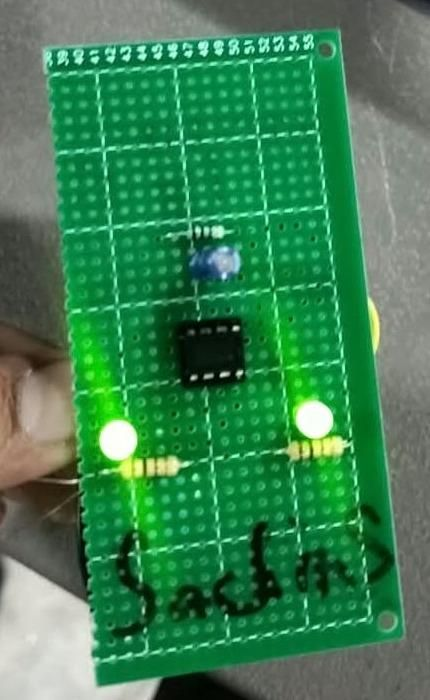
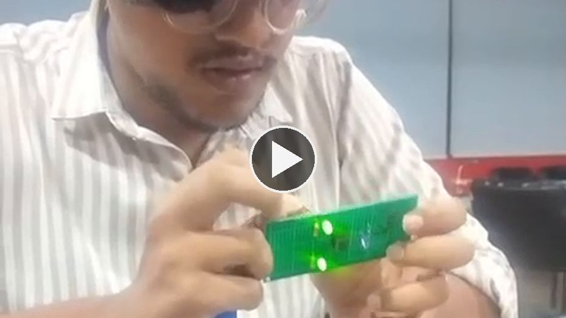

Date
15 October 2026
Hardware
NE555 timer IC (8-pin DIP), 47 kΩ and 2 × 100 Ω resistors, 10 µF capacitor, 2 LEDs, perfboard, 9 V battery
Software
Tools: soldering iron, rosin-core solder wire, wire cutter, connecting wire
01Aim
To build and solder a 555 timer circuit on a perfboard, understand how the circuit works, and verify its output. The 555 is wired as an astable oscillator: its output is fed back through a resistor and a capacitor, so it keeps switching by itself. Two LEDs, one on each side of the output, flash alternately and show the result. The assignment also covers the soldering process, the solder wire and iron used, and the precautions followed.
02The Circuit
2.1 How the 555 switches
The inputs of a 555 timer are two comparators. The trigger input (pin 2) sets the output HIGH when its voltage falls below 1/3 of the supply (Vcc). The threshold input (pin 6) sets the output LOW when its voltage rises above 2/3 of Vcc. When pin 2 and pin 6 are tied together they form one input, IN, and the output behaves as follows:
| Input voltage (pins 2 and 6) | Output (pin 3) | Behaviour |
|---|---|---|
| Below 1/3 Vcc | HIGH | Output is the opposite of a LOW input |
| Above 2/3 Vcc | LOW | Output is the opposite of a HIGH input |
| Between 1/3 and 2/3 Vcc | Unchanged | Hysteresis: the previous state is held |
So the 555 with pins 2 and 6 joined is an inverting Schmitt trigger, which switches at two different thresholds (1/3 and 2/3 Vcc). In this circuit the output is connected back to the input through R1, and a capacitor C1 holds the input node. The 555 therefore keeps inverting its own delayed output, and the output toggles forever. This is a relaxation oscillator (an astable multivibrator).
2.2 What the circuit does
The 555 output (pin 3) switches between roughly HIGH and LOW about one and a half times every second.
LED2 (from pin 3 to GND) lights when the output is HIGH.
LED1 (from +9 V to pin 3) lights when the output is LOW.
The two LEDs therefore blink alternately, and the circuit needs no other control input.
03The 555 Timer IC
The 555 is an 8-pin integrated circuit that contains two comparators, an SR flip-flop, a discharge transistor and a resistor chain of three equal 5 kΩ resistors that sets the 1/3 and 2/3 Vcc levels. It works from about 4.5 V to 16 V (NE555), so a 9 V battery is suitable.


| Pin | Name | Function | In this circuit |
|---|---|---|---|
| 1 | GND | Ground reference | Connected to battery negative |
| 2 | TRIGGER | Output goes HIGH when below 1/3 Vcc | Joined to pin 6 and to R1 and C1 |
| 3 | OUTPUT | Output, can source or sink about 200 mA | Drives R1 and both LEDs |
| 4 | RESET | Active-low reset; LOW forces the output LOW | Tied to +9 V, so never reset |
| 5 | CONTROL VOLTAGE | Access to the 2/3 Vcc reference | Not connected (a 10 nF to GND is often added) |
| 6 | THRESHOLD | Output goes LOW when above 2/3 Vcc | Joined to pin 2 |
| 7 | DISCHARGE | Open-collector transistor to GND | Not connected, not needed here |
| 8 | Vcc | Positive supply | Connected to +9 V |
04Components
4.1 Component list
| Ref. | Component | Value / type | Qty | Function |
|---|---|---|---|---|
| IC1 | Timer IC | NE555, 8-pin DIP | 1 | Core of the oscillator |
| R1 | Resistor | 47 kΩ | 1 | Charges and discharges C1 from the output. Sets the timing together with C1 |
| C1 | Capacitor | 10 µF, electrolytic | 1 | Stores charge; its voltage swings between 1/3 and 2/3 Vcc. Sets the timing |
| R2 | Resistor | 100 Ω | 1 | Limits the current of LED1 |
| R3 | Resistor | 100 Ω | 1 | Limits the current of LED2 |
| LED1 | LED | 5 mm | 1 | Lights when the output is LOW |
| LED2 | LED | 5 mm | 1 | Lights when the output is HIGH |
| BT1 | Battery | 9 V, with clip | 1 | Power supply |
| PCB | Perfboard | Single-sided, plated holes | 1 | Base on which parts are soldered |
| W | Connecting wire | Insulated, 3 pieces | 3 | Make the connections under the board |
4.2 Function of each component
NE555 (IC1): compares the voltage on its input with 1/3 and 2/3 of the supply and switches the output accordingly, so it serves as the heart of the oscillator.
R1 (47 kΩ): a path between the output and the input node. When the output is HIGH, current flows through R1 into C1; when it is LOW, C1 drains back through R1 into the output.
C1 (10 µF): the timing capacitor. Its slowly changing voltage is what the 555 watches. Being polarised, its long leg (+) goes toward the input node.
R2 and R3 (100 Ω): each protects one LED by limiting its current. Without them an LED on a 9 V supply would burn out at once.
LED1 and LED2: the indicators. They are on opposite sides of the output, so exactly one of them has current flowing at any time.
9 V battery: supplies Vcc to pin 8 and sets the voltage thresholds: 3 V (1/3) and 6 V (2/3).
05Circuit Diagram and Working

5.1 Connections
| From | To | Remark |
|---|---|---|
| Pin 8 (Vcc) and pin 4 (RESET) | +9 V | Power the IC and disable reset |
| Pin 1 (GND) | Battery negative (GND) | Ground |
| Pin 2 and pin 6 | Each other, R1 and C1(+) | The common input node |
| Pin 3 (OUTPUT) | R1, R2 and R3 | Output node |
| R1 | Pin 3 to the input node | Feedback resistor |
| C1 | Input node to GND | Timing capacitor (long leg to the node) |
| LED1 with R2 | +9 V (anode) to pin 3 through R2 | Lights when pin 3 is LOW |
| R3 with LED2 | Pin 3 through R3 to LED2 anode; cathode to GND | Lights when pin 3 is HIGH |
| Pin 5 and pin 7 | Not connected | Not used |
5.2 Working principle
Assume C1 is empty when the power is switched on. The input node is at 0 V, below 1/3 Vcc, so the 555 drives the output HIGH. Then:
Charging: with the output HIGH, current flows from pin 3 through R1 and charges C1. LED2 is on and LED1 is off.
Switch to LOW: when the voltage across C1 rises above 2/3 Vcc (about 6 V), the threshold comparator trips and the output goes LOW. LED2 turns off and LED1 turns on.
Discharging: with the output LOW, C1 discharges through R1 into pin 3. The voltage across it falls.
Switch to HIGH: when it drops below 1/3 Vcc (about 3 V), the trigger comparator trips and the output goes HIGH again. The cycle repeats.
| Time | Pin 3 | LED1 | LED2 | Voltage on C1 |
|---|---|---|---|---|
| Charging phase | HIGH | OFF | ON | Rising from 1/3 to 2/3 Vcc (3 V to 6 V) |
| Discharging phase | LOW | ON | OFF | Falling from 2/3 to 1/3 Vcc (6 V to 3 V) |
5.3 Timing
For the capacitor to move between 1/3 and 2/3 of Vcc in either direction, it takes about 0.693 × R × C. Both phases use the same R1 and C1, so the output is close to a 50 % duty square wave:
| Quantity | Formula | Value |
|---|---|---|
| Time of each half-cycle | t = 0.693 × R1 × C1 | |
| Time period | T = 2 × 0.693 × R1 × C1 = 1.386 × R1 × C1 | |
| Frequency | f = 1 / T |
For reference, the standard astable circuit and waveforms from the 555 datasheet are shown below. The circuit built here is a simpler variant of the same idea: the output pin itself charges and discharges C1 through R1, so the discharge pin and the second resistor are not needed.

These are theoretical values. The real rate differs a little because of capacitor tolerance (electrolytics are often ±20 %) and the output voltage not reaching exactly 0 V and Vcc on a bipolar NE555.
5.4 LED current
06Soldering
6.1 What soldering is
Soldering joins two metal parts, here a component lead and a copper pad, by melting a filler metal (solder) that wets both surfaces and then solidifies into a strong electrical and mechanical joint. The base metals are not melted; only the solder is. A good joint is shiny, smooth and shaped like a small cone (concave fillet) around the lead.
6.2 Solder wire used
| Item | Details |
|---|---|
| Type | Rosin-core (flux-core) solder wire |
| Alloy | 60/40 tin-lead (Sn60 Pb40): 60 % tin, 40 % lead |
| Wire diameter | 0.8 mm (typical for electronics) |
| Melting range | About 183 °C (solidus) to 190 °C (liquidus) |
| Flux | Rosin, built into the core of the wire. It removes oxide so the solder flows |
| Alternative (lead-free) | SAC305 (96.5 % Sn, 3 % Ag, 0.5 % Cu): melts at about 217 to 220 °C |
Tin-lead melts at a lower temperature and flows more easily than lead-free solder, which makes it easier for a beginner. Lead is toxic, so hands must be washed after soldering and the work done in a ventilated area. Lead-free solder is the choice where regulations require it.
6.3 Soldering iron and temperature
| Item | Details |
|---|---|
| Tool | Pencil-type soldering iron with a blue handle and a conical tip (about 25 to 40 W), used with a helping-hand stand, magnifier and flux paste |
| Recommended tip temperature, 60/40 solder | 300 °C to 350 °C |
| Temperature setting used | About 330 °C |
| Recommended tip temperature, lead-free solder | 350 °C to 370 °C |
| Contact time per joint | About 2 to 4 seconds |
The tip is kept about 100 to 150 °C above the melting point of the solder, which is hot enough to heat the joint quickly without damaging parts. Too low and the solder becomes grainy (a cold joint); too high and the pad can lift, the flux burns off and the component can be damaged. The 555 IC and the electrolytic capacitor are heat-sensitive, so each lead was heated for no more than a few seconds.
6.4 Soldering process
| Step | What was done |
|---|---|
| 1 Prepare | Placed the parts on the component side of the perfboard according to the layout. Bent the leads slightly under the board to hold them in place. |
| 2 Heat the iron and tin the tip | Let the iron reach its working temperature, wiped the tip on a damp sponge and applied a little solder to coat it (tinning). A shiny tip transfers heat well. |
| 3 Heat the joint | Touched the tip to both the pad and the lead together for 1 to 2 seconds. |
| 4 Feed solder | Touched the solder wire to the joint (not to the tip) so that it melted and flowed around the lead. |
| 5 Remove solder, then iron | Moved the wire away first, then the iron. Held the part still for a few seconds while the joint cooled. |
| 6 Trim and inspect | Cut the extra lead with the cutter and checked for shiny, cone-shaped joints and no bridges between neighbouring pads. |
| 7 Wire the connections | Soldered the three connecting wires and the battery leads on the underside to complete the connections. |
The IC was soldered in the order: low-profile parts first (resistors), then the IC and LEDs, and the capacitor and connecting wires last, which keeps the board steady while it is turned over. Two opposite corner pins of the IC were soldered first to fix it in position before the other pins.
6.5 Photographs of the soldering
Two photographs taken while the circuit was being soldered. The board is held in a helping-hand stand with a magnifying lens, so both hands are free for the iron and the solder wire. The iron is a pencil-type iron with a blue handle, and the red tin on the table holds soldering flux paste, which is used to keep the tip clean and help the solder flow.


Figure 5: Soldering the circuit in the lab (close-up and wider view), using the iron, the helping-hand stand with magnifier and flux paste
07Precautions
Keep the iron in its stand and never leave it on unattended. The tip is far above the temperature that causes burns.
Work in a ventilated place and do not breathe the flux fumes. Wash hands after handling leaded solder.
Wear safety glasses. Molten solder and clipped leads can spring toward the eyes.
Do not touch the tip or the freshly soldered joint. Use a stand or board and keep cables away from the iron.
Use the correct heat: heating for too long can damage the IC, the LEDs and the capacitor, or lift pads.
Check the polarity before soldering the electrolytic capacitor, the LEDs and the battery clip. Check the notch on the IC for pin 1.
Do not move a joint while it cools; movement causes a dull, cracked cold joint that must be reheated.
Clean the tip often and tin it before switching off. Make sure there are no solder bridges before applying power.
Disconnect the battery before touching or modifying the circuit.
08The Soldered Circuit
The photographs show the finished circuit. The component side shows the IC, the capacitor and the resistors. The numbers in Figure 6 mark the main parts. The reverse side holds the solder joints and the connecting wires.


Figure 6: Soldered circuit. Left: component side. Right: solder side, with the connecting wires and joints
| Left photograph (component side) | Right photograph (solder side) |
|---|---|
| 1 NE555 IC (8-pin DIP)2 R1, 47 kΩ3 C1, 10 µF4 LED1 (left)5 R2, 100 Ω (left)6 LED2 (right)7 R3, 100 Ω (right) | 1 Yellow connecting wire2 Blue connecting wire3 Red connecting wire4 Supply (battery) leads5 Soldered pins of the IC |
All joints were checked visually for a smooth, shiny finish and for bridges between adjacent IC pins before the battery was connected.
09Demonstration and Output
After the 9 V battery was connected, both LEDs lit. The photograph below shows the powered circuit; the complete recording of it is linked after it.

The complete recording is on Google Drive. Click the image to open the video. It shows the physical circuit with the LEDs lit after the battery is connected.

Video Demonstration Link: CLICK HERE
10Result: Does It Work as Expected?
The circuit works as a powered 555 oscillator: once the battery is connected it starts by itself and drives both LEDs, as the theory in Section 5 predicts. What the photograph and video show is summarised below:
| Expected | Observed |
|---|---|
| Circuit starts by itself on connecting the 9 V battery | Both LEDs light up as soon as the battery is connected (photograph and video) |
| LEDs driven from opposite sides of the output, so each is on only part of the cycle | Two LEDs, one on each side of the board, both glowing in the photograph and video |
| Rate about 1.5 Hz for 47 kΩ and 10 µF | Calculated only (about 1.5 Hz). The photograph and video frames show both LEDs lit, so the exact rate is not read from them |
| No soldering faults | No bridges or loose joints; the circuit worked at first power-up |
The calculated half-period (about 0.33 s) means each LED stays ON for about a third of a second, which is slow enough to follow by eye. In a photograph or video frame both LEDs can appear lit, because the camera exposure combines the two phases, even though only one is on at any instant. Because the output alternates, each LED receives about half the current, which is also why neither is at full brightness.
10.1 Possible improvements
Raise R2 and R3 to 330 Ω to 470 Ω so the LED current stays within the 20 mA rating (see Section 5.4).
Add a 10 nF capacitor from pin 5 to GND to make the thresholds immune to supply noise.
Use an IC socket so the 555 can be replaced without desoldering.
Change R1 or C1 to change the speed; for example 100 kΩ with 10 µF gives about 0.7 Hz.
11Conclusion
A 555 timer was soldered on a perfboard with two resistors, one capacitor, two LEDs and a 9 V battery. With pins 2 and 6 joined, the IC acts as an inverting Schmitt trigger, and feeding its output back through R1 and C1 turns it into an oscillator of about 1.5 Hz. On power-up both LEDs light, which confirms that the soldered circuit works; the 1.5 Hz alternation is the calculated rate and is not resolved in the recorded video. The assignment also gave practice in the soldering sequence: tinning, heating the joint, feeding solder, cooling and inspection, using 60/40 rosin-core solder at about 330 °C, together with the safety precautions that go with it.
12References and Acknowledgements
12.1 References
| No. | Reference | Used for | Link |
|---|---|---|---|
| 1 | Texas Instruments: NE555 precision timer datasheet | Pin functions, 1/3 and 2/3 Vcc thresholds, supply range | Click here |
| 2 | How To Mechatronics: 555 Timer IC, Working Principle, Block Diagram | Source of the pin and internal block diagram (Figure 1) | Click here |
| 3 | 555 timer IC (Wikipedia) | Internal structure, astable operation and timing formula | Click here |
| 4 | Electronics Tutorials: 555 Oscillator Tutorial | Astable timing calculation | Click here |
| 5 | Relaxation oscillator (Wikipedia) | Why a gate with hysteresis and RC feedback oscillates | Click here |
| 6 | Adafruit: Guide to Excellent Soldering | Soldering steps, tip temperature, joint inspection | Click here |
| 7 | SparkFun: How to Solder, Through-Hole Soldering | Through-hole soldering process and precautions | Click here |
| 8 | Solder (Wikipedia) | Alloy compositions and melting points of tin-lead and SAC solder | Click here |
| 9 | Soldering (Wikipedia) | Soldering process and safety | Click here |
| 10 | SparkFun: Light-Emitting Diodes (LEDs) | LED forward voltage and series resistor | Click here |
12.2 Acknowledgements
I soldered the circuit myself and took the photographs and the video of it, and the photographs of the soldering in progress were taken in the lab. The circuit diagram (Figure 3) was redrawn for this report from the circuit diagram given in the lab, and the callout numbers on Figure 6 were added by me. External sources are credited below.
555 pin and internal block diagram (Figure 1): How To Mechatronics, 555 Timer IC: Working Principle, Block Diagram, Circuit Schematics. The image belongs to How To Mechatronics.
Block diagram (Figure 2) and astable circuit and waveforms (Figure 4): Texas Instruments NE555 datasheet. These figures belong to Texas Instruments.
Datasheet values and thresholds: Texas Instruments NE555 datasheet. The owner is Texas Instruments.
Soldering steps and temperatures: Adafruit Guide to Excellent Soldering. The owner is Adafruit.
Timing formula: 555 timer IC (Wikipedia). Text is available under the Creative Commons Attribution-ShareAlike licence.
Other tasks
LED Interfacing with Arduino UNO
Four LEDs on Arduino pins D8 to D11: first blinking together, then chasing one after another.
TASK 3Sensor and Actuator Presentation
Closed-loop speed and position control of a PMDC motor using a rotary encoder.
TASK 4OLED-Based Game with Sensor Input
An Escape-the-Falling-Ball game on a 0.96-inch OLED, played with an analog joystick on an ESP32.
TASK 5FreeRTOS Temperature Alert System
A DHT11 alert on an ESP32 that flashes an LED once and waits for a button acknowledge, built with FreeRTOS tasks.